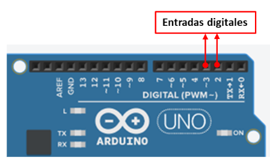
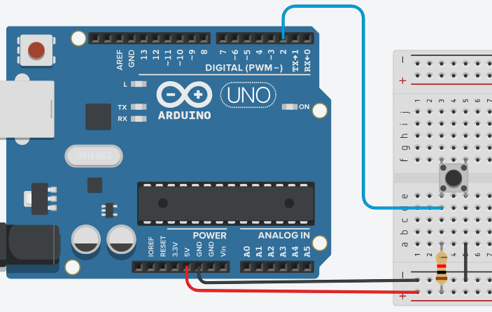
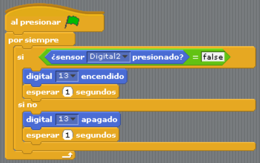
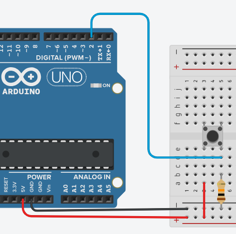
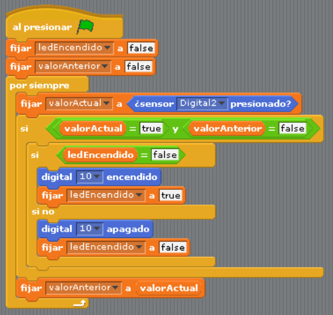

Entradas Digitales
Son utilizadas para leer el estado de un dispositivo conectado a nuestra placa Arduino, como un sensor de contacto, un interruptor, un sensor de proximidad infrarrojo o cualquier otro dispositivo que envíe señales digitales.
Estas señales disparan valores booleanos como: SI/NO, TRUE /FALSE, 0/1, que nos permiten programar acciones en función de esa lectura. Por ejemplo, puedes hacer que tu proyecto responda cuando un botón es presionado o un objeto pasa frente a un sensor.
Ejercicio:
Realiza un programa que permita encender el LED integrado cada vez que presiones un pulsador.
Armar el circuito como muestra la imagen:
- Conectar el pulsador en el centro de la protoboard, ya que utilizaremos sólo 2 clavijas: un lado positivo y el otro negativo.
- Conectar el cable de alimentación (rojo) desde el pin 5V, hacia el bus positivo de la protoboard.
- Conectar un cable (negro) desde el GND, hacia el bus negativo de la protoboard.
- Conectar el resistor de 10k alineado con el extremo positivo del pulsador y en el otro extremo con el bus positivo de la protoboard.
- Conectar un cable (azul) desde el pin digital 2 alineado entre el resistor y el lado positivo del pulsador.
- Conectar un cable (negro) desde el lado negativo del pulsador, hacia el bus negativo de la protoboard.
Ahora vamos a realizar el programa en S4A, recuerda conectar la placa al puerto USB y comprobar si existe comunicación.
Actividad:
- Conectar un LED en el pin Digital 10 y haz que se encienda al presionar el pulsador. Agregar una máscara a tu gusto.
- Intercambiar la conexión del resistor y el Pin 2 hacia el lado negativo del pulsador, como muestra la imagen. ¿Qué observas? Investiga las resistencias pull-up y pull-down. 
- Puedes cambiar el funcionamiento del LED a través de la programación. Por ejemplo, si deseas que el LED se encienda al presionar el pulsador y se quede en ese estado hasta presionar nuevamente el pulsador, entonces podemos declarar tres variables de estado (ledEncendido, valorAnterior y valorActual) que podrán evaluarse a través de condicionales y cambiar el estado del LED. El programa sería como muestra la imagen: 